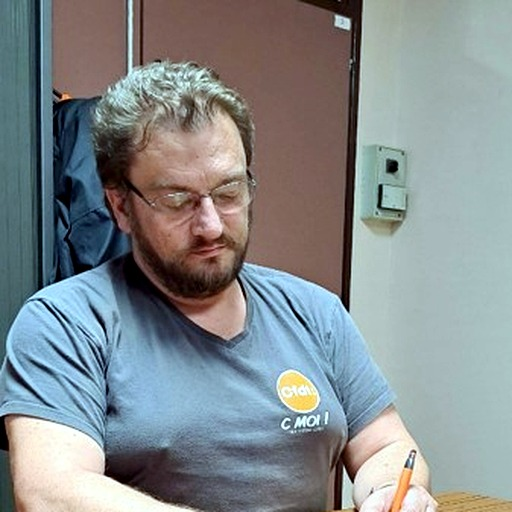
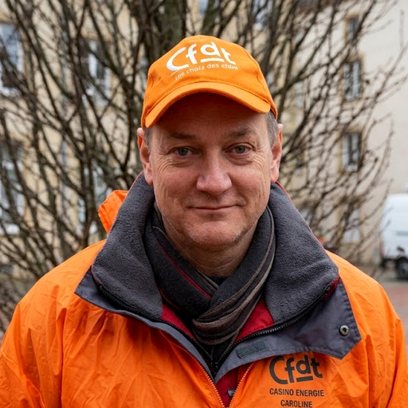

Vous défendre
La CFDT agit chaque jour pour faire respecter vos droits et vous accompagner dans vos démarches.
En savoir plusS’engager pour chacun, agir pour tous
La CFDT Chimie Énergie INEOS Sarralbe agit chaque jour à vos côtés pour défendre vos droits, améliorer vos conditions de travail et pérenniser ensemble l’activité du site.
La CFDT agit chaque jour pour faire respecter vos droits et vous accompagner dans vos démarches.
En savoir plusNous œuvrons pour votre santé, votre sécurité et de meilleures conditions de travail.
En savoir plusParce que le collectif est notre force, nous construisons ensemble les avancées de demain.
En savoir plusQui sommes-nous ?
Un syndicalisme structuré, transparent et proche de votre quotidien à l'usine.
Votre section locale s'appuie sur des structures régionales et nationales fortes pour défendre vos droits.
Le Bureau Lorrain assure la formation juridique de vos représentants au CSE.
Les orientations fédérales guident nos négociations locales, des NAO aux conditions de travail.
Échelon Confédéral
Secrétaire Générale de la CFDT
Elle assure la direction nationale et la représentation politique de la Confédération. Elle porte la voix de l'ensemble des travailleuses et des travailleurs auprès des instances gouvernementales et patronales nationales.
Photo : Anne Bruel, CC BY-SA 4.0
Échelon Fédéral · FCE-CFDT
Secrétaire Générale de la Fédération Chimie Énergie
Elle anime et coordonne l'action syndicale pour les branches de la chimie, de l'énergie, du plastique et du verre, avec un appui solide aux sections de France.
Élue au 8e Congrès de la FCE-CFDT à Lille.
Échelon Régional
Le Bureau Lorrain
Notre structure régionale de proximité, basée à Pont-à-Mousson. Elle gère les formations de vos élus locaux et apporte une expertise juridique indispensable pour négocier au mieux vos accords.


Échelon Local
Vos représentants de terrain
Au plus près de votre quotidien à l'usine. Notre équipe locale négocie vos accords d'entreprise, vous défend et siège au CSE. Nous privilégions un syndicalisme d'écoute, factuel et orienté solutions.
Notre sectionNotre section
Une équipe issue du terrain, à votre écoute au quotidien sur le site d'INEOS Sarralbe.
Délégué Syndical & Élu CSE
Thierry porte vos revendications au quotidien auprès de la direction et veille au respect de vos droits. Mandats exercés :
Expertises : Négociations, défense des droits, accessibilité.
Chef de Poste au Laboratoire
Linda assure votre représentation tout en prenant en charge des dossiers sociétaux et pratiques essentiels à votre quotidien.
Expertises : Gestion des litiges santé/mutuelle, égalité professionnelle.
SPP
Fred apporte ses compétences techniques et sa vigilance sur le terrain pour garantir un environnement de travail sûr à chacun.
Expertises : Prévention des risques, sécurité industrielle terrain.
Électricien Réseau (Maintenance) & Élu CSE
Alex assure un lien fort avec les équipes techniques et d'encadrement pour que les spécificités de chaque secteur soient entendues.
Expertises : Maintenance, infrastructures réseau, référent agents de maîtrise.
GN (Générateurs / Utilités)
Sébastien met sa grande expérience du site au service du suivi des évolutions industrielles et de la protection de votre avenir professionnel.
Expertises : Transition énergétique, arrêt chaudière charbon, passage au tout gaz.
Production / Fabrication
Marc combine une forte expertise de la production à un parcours syndical engagé pour soutenir efficacement les salariés sur le terrain.
Expertises : Relais technique fabrication, gestion relationnelle production.
Équipe renfort
Une équipe de relais indispensable basée au cœur du Secteur A.
Représentant des Agents de Maîtrise
Représentant Secteur Catalyseurs
Représentant Secteur Catalyseurs
Ce qui guide notre action au quotidien pour les travailleurs
Permettre à chaque travailleur de prendre sa vie en main et de développer son potentiel. Cela passe par le droit à la formation, à l'évolution et au respect de la dignité de chacun.
La démocratie ne s'arrête pas aux portes de l'entreprise. Nous militons pour que chaque salarié puisse s'exprimer, participer aux décisions et être acteur de ses conditions de travail.
Refuser le repli sur soi. Nous défendons les droits de tous, en créant des ponts entre salariés, demandeurs d'emploi et retraités pour lutter activement contre la précarité.
Garantir les mêmes droits pour tous. La CFDT combat au quotidien les discriminations et s'engage fermement pour l'égalité professionnelle entre les femmes et les hommes.
Une totale autonomie vis-à-vis des partis politiques, de l'État et des religions. Notre liberté de parole et d'action est garantie par les cotisations de nos adhérents.
Infos et actualités
Chaque sujet dispose de son espace pour publier les points utiles, les alertes et les actualités de la section.
Suivi des décisions industrielles, défense des postes et informations utiles sur l'avenir du site.
Lors du placement de vos CET, il vous est possible de les placer dans un nouveau compartiment, le PERECO. Il est également possible d’y placer votre intéressement. On vous explique :
Alors que l’inflation continue de peser sur le quotidien, la FCE-CFDT (Fédération Chimie Énergie) tape du poing sur la table au niveau national. L'objectif ? Défendre le pouvoir d'achat de tous les salariés de la branche Chimie.
Négociations salariales (minimas de branche) : la CFDT exige une revalorisation réelle de la grille des salaires pour qu'aucun coefficient ne soit écrasé par le SMIC.
Pénibilité et travail posté : face aux rythmes exigeants de la chimie (3x8, travail de nuit, week-ends), la CFDT réclame une meilleure reconnaissance financière et des mesures concrètes pour la fin de carrière, notamment des dispositifs renforcés de transition vers la retraite.
Le mot de vos élus : « Dans la chimie, la richesse se crée grâce à votre engagement quotidien. La CFDT se bat pour que cette richesse soit équitablement partagée et que votre santé soit préservée. »Lire l’article de la FCE-CFDT sur le partage des richesses
Lors des derniers Comités Nationaux de la Branche Chimie, la FCE-CFDT a réaffirmé que la santé et la sécurité au travail restaient des priorités non négociables, particulièrement sur les sites industriels à haute technicité.
Pour les salariés de la pétrochimie, la prévention des risques professionnels est un combat quotidien. La fédération accentue ses actions nationales sur des sujets cruciaux qui nous concernent tous :
Le mot de votre équipe locale « À Sarralbe, notre outil de travail demande une vigilance de chaque instant. La CFDT se bat au niveau national pour que les employeurs de la chimie financent de vrais plans de prévention, tant pour notre sécurité physique immédiate que pour notre santé à long terme. »Découvrir les fiches de prévention et l’action de la FCE-CFDT
La dernière réunion de négociation sur les NAO (Négociations Annuelles Obligatoires) s'est achevée. Grâce à la mobilisation de vos représentants, la direction a dû concéder plusieurs avancées pour votre pouvoir d'achat. Cependant, elle a tenté d'y associer un recul inacceptable sur nos conditions de travail.
Après consultation de ses adhérents, la CFDT a dit NON à ce chantage. Voici la synthèse de ce qu'il faut retenir.
Puisqu'aucun accord global ne sera signé, ces gains seront appliqués unilatéralement par l'employeur via un PV de désaccord.
Pour valider ces augmentations, la direction exigeait une contrepartie inadmissible : réduire notre temps de repos quotidien obligatoire de 11 heures à 9 heures consécutives.
Pour la CFDT, votre santé n'est pas une monnaie d'échange. Réduire le repos augmente la fatigue, aggrave le risque d'accidents et détruit l'équilibre entre vie professionnelle et vie personnelle.
Parce que nous protégeons votre santé et vos salaires, nous allons acter ce bilan par un PV de désaccord.
Ajoutez ici une actualité sur les échanges avec la direction, les demandes CFDT ou les avancées obtenues.
Le Comité Territorial de Branche (CTB) de la chimie en Lorraine est une instance de coordination spécifique qui rassemble exclusivement les délégués syndicaux CFDT du secteur. Qu'ils soient issus de TPE, de PME ou de grands groupes industriels, tous ces représentants partagent un socle commun : l'application de la convention collective de la chimie sur le territoire lorrain.
Ce comité permet aux équipes CFDT de se réunir, de partager leurs réalités de terrain et de construire une stratégie syndicale unie pour la région. Ensemble, ces délégués travaillent sur les dossiers majeurs qui impactent le quotidien et l'avenir des salariés : l'évolution des compétences face aux mutations industrielles, la défense des conditions de travail, l'accès à la formation ou encore les défis de la transition écologique dans les usines locales. C’est un véritable outil de force collective qui permet à la CFDT de parler d'une seule voix face aux enjeux du bassin de l'emploi lorrain.
Chaque année, notre CTB Chimie Lorraine se réunit avec tous les CTB de France dans le cadre du CNB (Comité national de branche) de la chimie.
À cette occasion, le CTB Lorraine a présenté un état des lieux des entreprises représentées dans la branche chimie sur notre territoire. Ce résumé montre une chimie lorraine contrastée : des projets industriels importants existent, mais ils s'accompagnent aussi de réorganisations, de plans sociaux, de pressions sur l'emploi et d'un durcissement des relations sociales dans plusieurs entreprises.
Le constat général reste préoccupant : la chimie lorraine traverse une période de profonde souffrance, marquée par la multiplication des plans sociaux, les politiques d'austérité budgétaire et un durcissement managérial. Pour la CFDT, une question centrale se pose désormais : comment protéger au mieux les militants face à des directions de plus en plus agressives ?
Vous protéger
Dans un monde professionnel en constante mutation, la protection du salarié ne peut pas se limiter à vérifier une fiche de paie. Pour la CFDT Chimie Énergie, vous protéger est une mission globale. Elle englobe votre sécurité physique et mentale à votre poste de travail, mais aussi la justice et l'équité dans vos relations avec la hiérarchie.
Voici comment la CFDT agit concrètement pour être votre meilleur rempart au quotidien.
Le premier droit d’un salarié est celui de rentrer chez lui en bonne santé après sa journée de travail. Dans nos secteurs (chimie, énergie, pharmacie…), les risques sont réels et la vigilance doit être totale.
La traque des risques physiques : à travers nos élus au CSE et la commission SSCT (Santé, Sécurité et Conditions de Travail), nous veillons à la conformité des équipements, à la fourniture de protections adaptées, et à l'ergonomie des postes pour éviter les troubles musculosquelettiques (TMS) ou l'exposition à des produits dangereux.
Le combat contre les risques invisibles : la charge de travail, le stress, le burn-out et le harcèlement sont des fléaux modernes. La CFDT forme ses élus pour détecter ces signaux d'alarme. Nous intervenons immédiatement auprès de la direction et de la médecine du travail dès que la santé mentale d'un salarié ou d'une équipe est menacée.
Le droit de retrait et d'alerte : en cas de danger grave et imminent, vos élus CFDT ont le pouvoir légal de déclencher des procédures d’alerte pour contraindre l'employeur à sécuriser immédiatement une situation.
L'entreprise est un lieu de subordination juridique, mais cela ne donne pas tous les droits à l'employeur. La CFDT est là pour s'assurer que le respect et la justice guident les relations professionnelles.
Un bouclier contre l'arbitraire : une sanction disciplinaire injustifiée ? Une réorganisation de service imposée sans concertation ? Une rupture conventionnelle forcée ? La CFDT décrypte le droit pour vous et rappelle à la direction ses obligations légales. Nous rétablissons le rapport de force pour que vous ne soyez pas écrasé(e).
L'accompagnement dans les moments sensibles : si vous êtes convoqué(e) par les ressources humaines ou votre manager pour un entretien disciplinaire, un élu CFDT s'assoit à vos côtés. Il prend des notes, s'assure que vos arguments sont entendus, calme les tensions et sécurise la procédure.
Le dialogue social comme outil de protection collective : en négociant des accords clairs sur le droit à la déconnexion, la régulation du télétravail ou l'égalité professionnelle, la CFDT pose des règles du jeu équitables. Ces textes protègent votre vie privée et empêchent les dérives managériales.
Parce que les difficultés personnelles ont un impact sur la vie professionnelle (et inversement), la CFDT offre une protection qui dépasse le cadre strict du bureau ou de l'usine.
Le soutien face aux accidents de la vie : en cas de maladie prolongée, d'invalidité ou de restructuration lourde, la CFDT vous aide à faire valoir vos droits auprès des organismes de prévoyance et de la sécurité sociale pour éviter la précarisation.
L'accompagnement face aux mutations du secteur : si votre métier est amené à évoluer ou à disparaître à cause des transitions technologiques ou écologiques, la CFDT se bat pour que l'entreprise finance des formations qualifiantes. Notre objectif : protéger votre employabilité tout au long de votre carrière.
La CFDT n'attend pas que le conflit éclate ou que l'accident survienne. Par notre présence quotidienne sur le terrain, nous agissons en amont pour corriger les injustices et sécuriser vos parcours.
Votre sécurité et votre dignité ne sont pas négociables. Faites confiance à la CFDT pour les défendre.
Vos droits
De la négociation nationale à l'accompagnement de proximité, la CFDT agit pour protéger vos droits et transformer vos attentes en avancées concrètes.
La Fédération Chimie Énergie de la CFDT (FCE-CFDT) agit comme un bouclier et un accélérateur de progrès social à l'échelle du pays.
Négocier vos conventions collectives : nous nous battons au niveau des branches professionnelles pour garantir des salaires minima décents, de meilleures conditions de travail, la reconnaissance de la pénibilité et une protection sociale complémentaire (mutuelle, prévoyance) de haut niveau.
Peser sur les transitions de demain : face aux défis climatiques et industriels, la CFDT anticipe les mutations de nos secteurs (chimie, pharmacie, énergie, plasturgie...). Nous exigeons des investissements pour l'emploi et la formation afin que la transition écologique ne se fasse jamais au détriment des salariés.
Un réseau d'experts à votre service : en adhérant, vous bénéficiez de l'appui de juristes spécialisés en droit du travail et de formations syndicales de pointe pour décrypter les stratégies des grands groupes.
Le national fixe le cadre, mais c'est sur le terrain que le syndicalisme prend tout son sens. Dans notre entreprise, votre équipe CFDT est votre premier recours.
Votre Délégué Syndical (DS) : le négociateur du quotidien. Il est le garant de vos droits face à la direction. Son rôle ? Négocier les accords d'entreprise qui impactent directement votre quotidien : vos salaires (NAO), l'aménagement de votre temps de travail, le télétravail, l'égalité professionnelle ou encore l'intéressement et la participation. Le DS est là pour transformer vos attentes en réalités contractuelles.
Vos Membres Élus (CSE) : vos représentants à l'écoute. Vos élus au Comité Social et Économique (CSE) portent vos réclamations individuelles et collectives.
Santé, Sécurité et Conditions de travail (SSCT) : ils veillent à ce que vous travailliez en toute sécurité, traquent les risques psychosociaux (burn-out, harcèlement) et agissent pour l'amélioration de votre environnement de travail.
Accompagnement individuel : un entretien préalable à une sanction ? Une rupture conventionnelle ? Un doute sur votre fiche de paie ? Vos élus CFDT vous conseillent, vous préparent et vous accompagnent physiquement pour que vous ne soyez jamais démuni(e) face à la hiérarchie.
Adhérer
Téléchargez le bulletin d’adhésion CFDT SCEL, remplissez votre partie personnelle et joignez votre RIB. Pour l’autre partie du document, prenez contact avec le délégué syndical CFDT.
Référence contact : Thierry Krempff · thierry.krempff@gmail.com · 06.87.15.23.64
On s’assure pour sa voiture, pour son logement, pour sa santé… mais qu’en est-il de notre travail, qui est pourtant notre principale source de revenus et occupe la majeure partie de nos vies ? Trop souvent, le réflexe syndical n’intervient que lorsque la crise est déjà là. Pourtant, adhérer à la CFDT Chimie Énergie dès aujourd’hui, c’est faire un choix stratégique pour votre quotidien, votre sécurité et votre pouvoir d'achat.
Le monde du travail se complexifie et face à une direction ou un management hiérarchique, un salarié isolé est souvent démuni. En rejoignant la CFDT, vous brisez cette solitude. Vous bénéficiez immédiatement de l’écoute, du conseil et de l'expertise de nos élus locaux. Plus encore, après quelques mois d’adhésion, vous accédez à notre Caisse Nationale d'Action Syndicale (CNAS) : un véritable bouclier qui prend en charge vos frais d'avocat et de justice si vous devez défendre vos droits devant les tribunaux. C'est l'assurance d'être protégé, quoi qu'il arrive.
La CFDT est le premier syndicat de France parce qu’elle refuse la posture du non systématique ou des discussions stériles à la machine à café. Nous pratiquons un syndicalisme de terrain, de proposition et de négociation. Notre but ? Obtenir des résultats concrets sur vos salaires, votre qualité de vie au travail, le télétravail ou l'égalité professionnelle. En adhérant, vous obtenez le droit de vote sur les accords de notre entreprise : c’est vous qui validez ou refusez les propositions de la direction. Vous reprenez le contrôle.
Contrairement aux idées reçues, se syndiquer ne coûte presque rien. La cotisation CFDT représente 0,75 % de votre salaire net. Mais la réalité est encore plus avantageuse : 66 % de cette somme vous sont remboursés sous forme de crédit d’impôt (le Trésor Public vous verse un chèque si vous n'êtes pas imposable). Au final, votre protection ne vous coûte que quelques euros par mois.
Mieux encore, dès votre premier jour, vous accédez gratuitement au Club Avantages CFDT, qui vous offre des réductions massives sur vos achats du quotidien, le cinéma, les vacances ou les loisirs. Très souvent, les économies réalisées à l'année dépassent largement le coût de votre cotisation !
Il n'y a pas de secret : face à une direction, le poids des délégués syndicaux dépend directement du nombre de salariés qui les soutiennent. Chaque nouvelle adhésion est un signal fort envoyé aux dirigeants. C’est la preuve que nous sommes unis, solidaires et déterminés à nous faire respecter lors des négociations salariales.
Adhérer à la CFDT, ce n’est pas chercher le conflit, c’est s’offrir une sécurité pour sa carrière, du pouvoir d'achat pour sa vie, et le respect que l'on mérite au travail.
Rejoignez-nous dès aujourd'hui. Ensemble, faisons bouger les lignes !
Contact
Thierry Krempff, Délégué Syndical CFDT, peut être contacté pour une question, une alerte ou un besoin d'accompagnement.
Pour une situation personnelle ou sensible, indiquez simplement que vous souhaitez être rappelé et évitez d’envoyer des documents confidentiels dans un premier message.
Délégué Syndical CFDT INEOS Sarralbe
Le site ne transmet pas votre message : il ouvre seulement l’application choisie sur votre téléphone ou votre ordinateur.